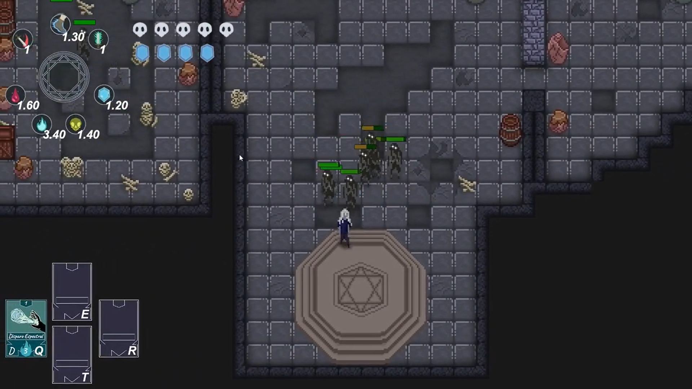
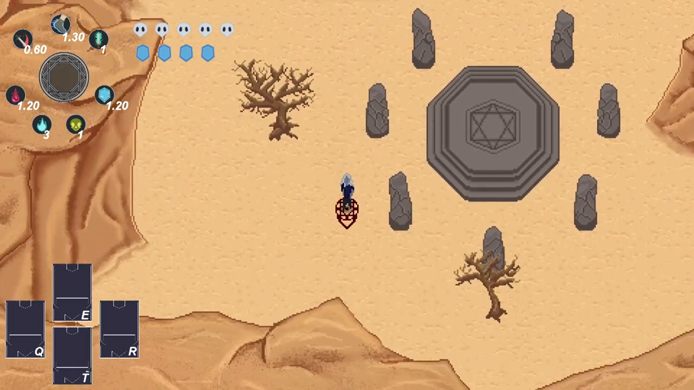
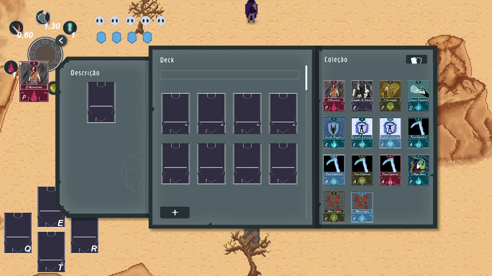

LOST SINNERS
Um dungeon crawler roguelike de ação focado em combate tático de curta distância. O jogador empunha uma espada e deve desbravar profundezas geradas de forma procedural, enfrentando ecossistemas de criaturas agressivas. Cada tentativa é única, exigindo domínio de padrões de ataque, reflexos para esquiva e decisões estratégicas na escolha de relíquias que alteram os atributos do guerreiro.

Mecânicas do Jogo
O loop de progressão pune erros, mas recompensa o aprendizado. Clique nos cards abaixo para expandir os sistemas mecânicos essenciais:
Combate Direcional
▼
Mecânica de esgrima baseada em combos e temporização. Os ataques de espada possuem caixas de colisão (hitboxes) precisas, exigindo que o jogador calcule a distância do golpe e use janelas de "i-frames" (frames de invulnerabilidade) na esquiva para não ser interrompido.
Geração Procedural
▼
A cada nova partida, a masmorra é reconstruída do zero. Um algoritmo conecta salas de combate, salas de tesouro, lojas e arenas de chefes de forma aleatória, garantindo que o posicionamento de armadilhas e inimigos nunca se repita.
Permadeath e Progressão
▼
A morte redefine o progresso do andar atual, limpando os itens temporários recolhidos. No entanto, o jogador acumula uma moeda permanente (como almas ou runas) que pode ser gasta em um hub central para desbloquear novas técnicas de espada ou melhorias de vida inicial.
Sinergia de Relíquias
▼
Baús escondidos fornecem artefatos com modificadores passivos. Coletar itens compatíveis cria sinergias devastadoras — como fazer a espada disparar ondas de choque congelantes ou aplicar dano de fogo crítico a cada terceira esquiva perfeita.
Minhas Funções
Fui responsável pela arquitetura de geração dos mapas e pelo ajuste do "Game Feel" do combate corpo a corpo.
💻 PROGRAMAÇÃO (Arquitetura e Colisões)
▼
Desenvolvimento do script de geração aleatória de masmorras baseado em grafos. Programação do sistema de combate usando Raycasts e Overlaps para checagem precisa de acertos e controle detalhado do "hitstop" (congelamento curto de frames) para dar peso aos golpes da espada.
📐 GAME DESIGN (Comportamento e Economia)
▼
Criação das árvores de comportamento (Behavior Trees) dos inimigos para alternarem entre perseguir, cercar ou recuar. Balanceamento dos atributos de dano, velocidade dos monstros por andar e definição da taxa de aparição (drop-rate) das relíquias em baús.


Acesse o Projeto
Desça até a masmorra jogando o protótipo direto no itch.io ou estude os fluxogramas de lógica e design do core loop no GDD.
Jogar no Itch.io ↗ Ler o GDD do Jogo 📄Gameplay em Ação
Veja abaixo um trecho de gameplay focado em uma luta intensa contra um chefe de área, demonstrando o uso combinado de esquivas e combos rápidos.